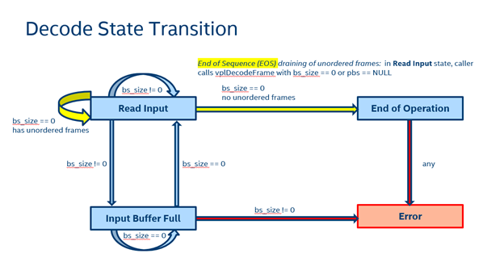

Video Processing Library (oneVPL)¶
The Video Processing Library is a programming interface for all video/image related usages, with focus on portable media pipeline on CPU, GPU, AI accelerators and FPGA, media and compute/render interoperability, to provide the best cross domain pipeline experience. The Video Processing Library provides the following features:
Decode and Video Post Processing
VPL-Memory Library for Image Object passing between media and compute/render, zero Buffer Copy among Different HW Engines
Encode
Transcoding Pipeline
Video Analytics Pipeline
Object Tracking and Optical Flow Library
Device Discovery and Device Capability Query
Intel’s implementation of VPL will be hosted at https://software.intel.com/en-us/oneapi/vpl# after release to public.
See VPL API Reference for a detailed API description.
Workstreams¶
The VPL API is defined around workstreams, which are referenced by
vplWorkstream, an opaque pointer. See
Workstreams for all workstream APIs.
A Workstream defines a set of settable and gettable properties to configure:
Input and output: image formats, frame rates, resolutions, cropping, aspect ratios
Internal settings: maximum number of decoded image buffers, internal input raw data buffer size
Encoding preset and heuristics: encoding bitrates, scenarios and target usage
VplWorkstreamProp names all the properties. Get and set
the properites with vplGetConfigProperty and
vplSetConfigProperty().
Decode¶
The vpl::Decode Workstream defines the API for video
decode and certain post processing of decoded frames. Inputs are
elementary bitstreams. Outputs are raw frames. The memory location of
a decoded image is stored in a vplm::memory object, a
device independent memory abstraction for multi-hardware portability
and zero-copying memory sharing.
Supported Codecs¶
VPL can decode the following elementary bitstream formats:
Codec |
Notes |
|---|---|
AVC/H264 |
8 bit 4:2:0 |
HEVC/H265 |
8 bit 4:2:0 main profile |
The vpl::Decode::Decode() constructor takes a source format as
defined in VplFourCC and a targeted decoding devices in
VplTargetDevice, where VPL_TARGET_DEVICE_DEFAULT let the runtime to
choose the best target device.
Supported Video Post Processing Operations¶
VPL decode API also supports the following video post processing operations to on the decoded outputs:
Codec |
Notes |
|---|---|
Color space conversion |
to NV12, I420, and RGBA |
Resize |
up to 1920x1080 |
To add Video Post Processing Operations to the default decode
operation, a programmer can use the vplSetConfigProperty()
to set various output color space formats and sizes.
Decode workstream state is defined in vplWorkstreamState.
Decoding Sequence¶
Member function for decoding a bitstream input and returning the decoded frames is
vpl::Decode::DecodeFrame()
New input data are passed to the decoder when pbs != NULL && size != 0. A pair of functions: vpl::Decode::DecodeFrame()
and vpl::Decode::GetState() work together to form a decoding
loop where the decoder can request the caller to send more data or
request it to retrieve decoded frames without sending new data.
By default, decoder returns the decoded frames in display order. It will hold over one or more decoded frames if they are not the earliest in the display order. Hence, there are two conditions when it needs additional inputs:
The existing input does not contain a full frame of data to decode.
The existing input does not contain the next to output frame data in display order.
When either of the two above conditions occurs, Decode sets the
VPL_STATE_READ_INPUTstate for new input data.Caller should call
vpl::Decode::DecodeFrame()passing new inputs in pbs and bs_size arguments. Decode will return a decoded frame when it is the next in display order.If Decode has additional outputs in display order to return, it sets the
VPL_STATE_INPUT_BUFFER_FULLstate. Caller should callvpl::Decode::DecodeFrame()with bs_size = 0 to retrieve the remaining outputs until Decode again sets theVPL_STATE_READ_INPUTstate for new input data.
If the caller has no more data to decode, it can call
vpl::Decode::DecodeFrame()withpbs == NULL || bs_size == 0indicating input has reached the End of Sequence (EOS). Decode will return the remaining holdover frames one-by-one until there is no more output. Decode then setsVPL_STATE_END_OF_OPERATIONstate and terminate the Workstream.
The Decode state transition diagram is illustrated below.
Example Code¶
Create a decoder workstream which decodes an H264 bitstream and reformat the frames to RGBA and resize to 352x288.
// Create decoder, default device is GPU
vpl::Decode decoder(VPL_FOURCC_H264);
// Set output color format
decoder.SetConfig(VPL_PROP_DST_FORMAT, VPL_FOURCC_RGBA);
// Set output resolution
VplVideoSurfaceResolution output_size = {352, 288};
decoder.SetConfig(VPL_PROP_OUTPUT_RESOLUTION, output_size);
Main loop – read input bitstream and write to file.
vplWorkstreamState decode_state = VPL_STATE_READ_INPUT;
for (; decode_state != VPL_STATE_END_OF_OPERATION &&
decode_state != VPL_STATE_ERROR;
decode_state = decoder.GetState()) {
// read more input if state indicates buffer space
// is available
uint32_t bs_size = 0;
if (decode_state == VPL_STATE_READ_INPUT) {
bs_size = (uint32_t)fread(pbs, 1, BUFFER_SIZE, fInput);
}
// Attempt to decode a frame. If more data is needed read again
vplm_mem image = decoder.DecodeFrame(pbs, bs_size);
if (!image) continue;
// If decode resulted in a frame of output write it to file
vplWriteData(fOutput, image);
}
Memory¶
The Memory API provides sharing of 1D buffers and 2D images across different frameworks (e.g. SYCL, OpenCL, VAAPI, DXVA2) and different devices (CPU, GPU). Buffer sharing across the decode, compute and encode pipeline is important for both performance and portability.
The buffer sharing mechanisms can be classified into 3 types:
Direct sharing when access is granted to the primary object’s representation in physical memory, but this happens via different framework specific logical memory objects (like VAAPI surface or OpenCL memory). That’s the case when handle from one framework can be converted to the handle of another framework. For example, via OpenCL VAAPI Sharing Extension.
Mapping when object is being mapped to the device memory and framework handle is generated. That’s a typical case for CPU (HOST) access to the video memory. Underneath implementation might significantly vary and result in a kind of direct access or accessing a copy of the memory object with the set of associated copy and on-the-fly conversion operations. For example, OpenCL provides two sets of functions: clEnqueueReadBuffer, clEnqueueWriteBuffer for copying, and clEnqueueMapBuffer for direct mapping between CPU and OpenCL device.
Coherent sharing when memory object has unified addressing the physical memory and the underlying hardware and software system layers assures coherency between these representations as in a unified shared memory mode.
The Memory API aims to provide a sharing mechanism with the highest performance. From this perspective, the library uses “direct” sharing whenever possible. However, currently, there are a lot of various restrictions coming from all over the software stack which makes “direct” sharing unavailable:
Framework restrictions where some color formats are not supported, or lack of capability to import certain memory handle
Underlying driver implementation (or even HW) restrictions
As oneAPI software stack evolves, we intend to eliminate the direct sharing restrictions in the underlying frameworks and drivers through API extension and implementation enhancement.
The current VPL Memory Library provides the following direct sharing capabilities:
Sharing of CPU (HOST) allocated memory on Linux (via userptr):
With VAAPI driver
With OpenCL driver and SYCL
Sharing of VAAPI allocated memory:
With OpenCL, SYCL
Exporting dmabuf handle:
From VAAPI memory object
Recall that oneAPI platform is a host and a collection of devices; and
each device has an associated command queue. Operations on the
devices are executed through submitting tasks to devices’ command
queues. In the application domain of video processing pipeline, each
device may have multiple command queues corresponding to the media
driver, OpenCL and SYCL compute drivers and 3D graphics drivers. For
Intel’s GPU on Linux, a VAAPI driver executes tasks for video
decoding, post processing and encoding, an OpenCL driver executes
tasks for compute such as DL inference, and an OpenGL driver executes
tasks for 3D rendering. Buffers and images allocated by these drivers
are initially only accessible in the context of their corresponding
command queues. To share a buffer between a source and a sink command
queues, VPL Memory library must extract the buffer address from the
source command queue context, map the address to the sink command
queue context, such that, tasks in the sink command queue can now read
or write to the buffer. We call this <command_queue,buffer> pair a
memory handler. Memory handlers are encapsulated in the
vplm::memory class hierarchy.
To share a buffer to a device driver command queue context, just
simply constructs a new memory handler of the corresponding derived
class from the base vplm::memory object. For instance,
the code above converts a CPU allocated memory to a GPU VAAPI surface
for media processing.
In addition to the buffer sharing API in vplm::*:memory subclass constructors, VPL Memory API also provides:
API to import memory already allocated by the application external to VPL Memory library
API to allocate memory
The memory import and allocation functions are defined in vplm::cpu::make_memory, vplm::opencl::make_memory, vplm::sycl::make_memory, and vplm::vaapi::make_memory.
Creating memory objects¶
An application can use the VPL Memory Library to create a memory object for one of the supported frameworks. For example, the following code allocates memory in system memory (we count CPU (HOST) as one of the frameworks):
#include <om++.h>
vplm::cpu::memory yuv_image = vplm::cpu::make_memory(1920, 1080, VPLM_PIXEL_FORMAT_NV12);
or it can allocate memory externally and request the VPL Memory Library to manage it as in the following example for VAAPI:
#include <om++.h>
#include <om_vaapi++.h>
VADisplay dpy;
VASurfaceID id;
vaCreateSurfaces(dpy, VA_RT_FORMAT_RGB32, 1920, 1080, &id, 1, attribs, num_attribs);
vplm::vaapi::memory rgb_image = vplm::vaapi::make_surface(dpy, id);
In either case, it ends up with the framework specific C++ object (in
our examples vplm::cpu::memory or
vplm::vaapi::memory), and hence, have access to the
framework specific API defined by VPL Memory for this object. For
example, the following code will access CPU allocated image (via
vplm::cpu_image representation):
vplm::cpu_image image;
yuv_image.map(VPLM_ACCESS_MODE_READ, image);
// do something with the image since you have access to data pointers:
printf("Y data pointer: %p\n", image.data(0));
yuv_image.unmap(image);
Helper Class for Simplifying Image Data Access¶
In the examples above we directly used a memory object to access its
data. While this is possible, there is a simpler way. Most frameworks
require a program to acquire and release access to data. For the CPU
access example, we saw calls to map and unmap to acquire/release
access to the data. Using the vplm::cpu_image helper
class eliminates the need to map and unmap:
{
vplm::cpu::image cpu_image(yuv_image, VPLM_ACCESS_MODE_READ);
// do something with the image since you have access to data pointers:
printf("Y data pointer: %p\n", image.data(0));
}
This helper class issues acquire and release operations to mark
start/stop data access in constructor and destructor. Another
“feature” of these helper classes is that they accept base
memory object (vplm::memory) in constructors. This means that we can
use helper classes to make implicit convertion between different
framework objects. For example, with the following we will map our
VAAPI image on to CPU:
{
vplm::cpu::image cpu_image(rgb_image, VPLM_ACCESS_MODE_WRITE);
// do something with the image since you have access to data pointers:
printf("R data pointer: %p\n", image.data(0));
}
Usage example The following example summarize the key usage scenario:
#include <om++.h>
#include <om_vaapi++.h>
VADisplay dpy = init_vaapi();
VASurfaceID id = create_per_my_needs(); // calls vaCreateSurfaces inside
vplm::cpu::memory yuv_image = vplm::cpu::make_memory(1920, 1080, VPLM_PIXEL_FORMAT_NV12);
vplm::vaapi::memory rgb_image = vplm::vaapi::make_surface(dpy, id);
{
vplm::cpu::image cpu_image(yuv_image, VPLM_ACCESS_MODE_WRITE);
// do something with the image since you have access to data pointers:
printf("Y data pointer: %p\n", image.data(0));
// for example, write data into the surface
}
{
vplm::vaapi::image vaapi_cpu_image(dpy, yuv_image);
vplm::vaapi::image vaapi_rgb_image(dpy, rgb_image); // just for consistency
// do something with surfaces via VAAPI since we have access to them
// for example, convert yuv which we just wrote on CPU to rgb format
convert_yuv_to_rgb(vaapi_cpu_image.id(), vaapi_rgb_image.id())
}
{
vplm::cpu::image cpu_image(rgb_image, VPLM_ACCESS_MODE_READ);
// now we can read from the CPU data which we got in rgb image after VAAPI conversion:
printf("R data pointer: %p\n", image.data(0));
}
The VPL API defines 4 different helper classes, one for each supported device context:
vplm::cpu::image
vplm::opencl::image,
vplm::sycl::memory and
vplm::vaapi::image.
VPL Encode API¶
The oneVPL Encode API will be released in sync with Intel’s oneAPI reference implementation release in 2020.
VPL Transcode API¶
The oneVPL Transcode API will be released in sync with Intel’s oneAPI reference implementation release in 2020.
VPL Video Analytics Pipeline¶
The oneVPL Video Analytics Pipeline API will be released in sync with Intel’s oneAPI reference implementation release in 2020.
VPL Object Tracking and Optical Flow Library¶
The oneVPL Object Tracking and Optical Flow Library API API will be released in sync with Intel’s oneAPI reference implementation release in 2020.
VPL Device Discovery and Device Capability Query¶
The oneVPL Device Discovery and Device Capability Query API will be released in sync with Intel’s oneAPI reference implementation release in 2020.
VPL API Reference¶
Error Handling¶
vplStatus¶
-
enum
vplStatus¶ status codes
Values:
-
VPL_OK= 0¶
-
VPL_ERR_NOT_SUPPORTED= -1¶
-
VPL_ERR_NULL_POINTER= -2¶
-
VPL_ERR_NOT_FOUND= -3¶
-
VPL_ERR_HW_UNAVALIBLE= -4¶
-
VPL_ERR_INVALID_FRAME= -5¶
-
VPL_ERR_OUT_OF_RESOURCES= -6¶
-
VPL_ERR_INTERNAL_ERROR= -7¶
-
VPL_ERR_INVALID_SIZE= -8¶
-
VPL_ERR_INVALID_PROPERTY= -9¶
-
Workstreams¶
VplWorkstreamType¶
VplWorkstreamProp¶
-
enum
VplWorkstreamProp¶ Settable/Gettable properties for workstreams.
Values:
-
VPL_PROP_WORKSTREAM_TYPE¶
-
VPL_PROP_VERSION¶
-
VPL_PROP_VERSION_STRING¶
-
VPL_PROP_DECODED_BUFFER_SIZE¶
-
VPL_MAX_NUMBER_OF_DECODED_IMAGES¶
-
VPL_PROP_ENCODE_BITRATE¶
-
VPL_PROP_ENCODE_SCENARIO¶
-
VPL_PROP_ENCODE_TARGETUSAGE¶
-
VPL_PROP_SRC_FORMAT¶
-
VPL_PROP_DST_FORMAT¶
-
VPL_PROP_INPUT_FRAMERATE¶
-
VPL_PROP_OUTPUT_FRAMERATE¶
-
VPL_PROP_INPUT_RESOLUTION¶
-
VPL_PROP_OUTPUT_RESOLUTION¶
-
VPL_PROP_INPUT_CROPS¶
-
VPL_PROP_OUTPUT_CROPS¶
-
VPL_PROP_INPUT_ASPECTRATIO¶
-
VPL_PROP_OUTPUT_ASPECTRATIO¶
-
VPL_PROP_INPUT_PICSTRUCT¶
-
VPL_PROP_OUTPUT_PICSTRUCT¶
-
VPL_PROP_STATUS_CALLBACK¶
-
VPL_PROP_STATUS_CALLBACK_DATA¶
-
VPL_PROP_STATUS_LEVEL¶
-
vplSetConfigProperty¶
-
vplStatus
vplSetConfigProperty(vplWorkstream ws, VplWorkstreamProp prop, void *value, size_t size)¶ Set a workstream property.
vplGetConfigProperty¶
-
vplStatus
vplGetConfigProperty(vplWorkstream workstream, VplWorkstreamProp prop, void *out_value, size_t *out_size)¶ Get a workstream property.
Decode¶
vpl::Decode¶
-
enum
vplWorkstreamState¶ workstream state communicates next steps to the application
Values:
-
VPL_STATE_READ_INPUT= 1000¶ Decoder needs additional input bitstream data to decode.
-
VPL_STATE_CLOSED_TO_INPUT= 1001¶
-
VPL_STATE_ERROR= 1002¶ Decoder has encountered an error and entered error state.
-
VPL_STATE_INPUT_BUFFER_FULL= 1003¶ Decoder internal input buffer is full. Caller must retrieve the decoded frames before supplying new bitstream data.
-
VPL_STATE_INPUT_EXCEEDS_BUFFER_SIZE= 1004¶ The input data exceeds the capacity of the input buffer.
-
VPL_STATE_END_OF_OPERATION= 1005¶ All decoded frames have been retrieved by the caller. Decoder workstream ends.
-
-
class
Decode¶ Decode + frame processing workstream.
Public Functions
-
Decode(VplFourCC src_format, VplTargetDevice device = VPL_TARGET_DEVICE_DEFAULT)¶ Constructor for decode workstream.
- Parameters
[in] src_format: VplFourCC codec the workstream will decode[in] (optional): target device
-
virtual
~Decode(void)¶ Destructor for decode workstream.
-
vplm_mem *
DecodeFrame(const void *pbs, size_t size)¶ Constructor for decode workstream.
- Parameters
[in] *pbs: bitstream input data[in] size: size of input data in bytes
-
operator vplWorkstream()¶ Cast operator for C++/C API interoperability.
-
vplWorkstreamState
GetState()¶ Get workstream state.
-
template<typename
T>
vplStatusSetConfig(VplWorkstreamProp prop, T val)¶ Set workstream parameter.
-
template<typename
T>
vplStatusGetConfig(VplWorkstreamProp prop, T &val)¶ Get workstream parameter value.
Protected Attributes
-
vplWorkstream
m_workstream¶
-
Memory¶
vplm::cpu_image¶
-
class
cpu_image: public vplm::wrapper<vplm_cpu_image>¶ Subclassed by vplm::cpu::image
vplm::memory¶
-
class
memory: public vplm::wrapper<const vplm_mem *>¶ Base C++ VPL Memory object.
This class wraps C memory handle and provides access to generic VPL Memory API calls independent from the HW frameworks like getting/setting properties.
To access underlying memory object within some framework (like Opencl or VAAPI), VPL Memory C++ API defines framework specific memory handlers inherited from this base class. The key thing to note is that end user can construct framework handler from the base memory object. For example:
#include <vplmemory/vplm++.h> #include <vplmemory/vplm_vaapi++.h> vplm::memory mem = get_from_somewhere(); vplm::vaapi::memory va_mem(mem); printf(">>> VASurfaceID=%d\n", va_mem.getSurfaceId());
Subclassed by vplm::cpu::memory, vplm::opencl::memory, vplm::vaapi::memory
vplm::cpu::memory¶
vplm::cpu::image¶
-
class
image: public vplm::cpu_image¶ CPU (HOST) image accessor.
Helper class which maps memory object for CPU (HOST) access in constructor and unmaps in destructor. Example:
#include <vplmemory/vplm++.h> vplm::memory mem = get_from_somewhere(); { vplm::cpu::image image(mem, VPLM_ACCESS_MODE_READ); printf(">>> first plane stride is: %d\n", image.stride(0)); }
vplm::opencl::memory¶
-
class
memory: public vplm::memory¶ OpenCL memory accessor.
Public Functions
-
memory(cl_command_queue queue, const vplm_mem *mem)¶
-
vplm_status
get(vplm::cl_image &image)¶
-
vplm::cl_image
get()¶
-
vplm_status
begin_access(const vplm::cl_image &clmem, cl_uint num_events_in_wait_list, const cl_event *event_wait_list, cl_event *event)¶
-
vplm_status
end_access(const vplm::cl_image &clmem, cl_uint num_events_in_wait_list, const cl_event *event_wait_list, cl_event *event)¶
-
vplm::opencl::image¶
-
class
image: public vplm::cl_image¶ OpenCL image accessor.
Helper class which gets access to the memory object as OpenCL image in constructor and releases access in destructor. Example:
#include <vplmemory/vplm++.h> #include <vplmemory/vplm_opencl++.h> vplm::memory mem = get_from_somewhere(); { vplm::opencl::image image(mem, VPLM_ACCESS_MODE_READ); printf(">>> first plane cl_mem: %p\n", image[0]); }
vplm::sycl::memory¶
vplm::sycl::image¶
Warning
doxygenclass: Cannot find class “vplm::sycl::image” in doxygen xml output for project “oneVPL” from directory: elements/oneVPL/doxygen/xml
vplm::vaapi::memory¶
Miscellaneous¶
VplFourCC¶
-
enum
VplFourCC¶ bitstream and raw frame format FourCC codes
Values:
-
VPL_FOURCC_H264= VPL_MAKEFOURCC('H', '2', '6', '4')¶
-
VPL_FOURCC_H265= VPL_MAKEFOURCC('H', '2', '6', '5')¶
-
VPL_FOURCC_NV12= VPL_MAKEFOURCC('N', 'V', '1', '2')¶
-
VPL_FOURCC_YV12= VPL_MAKEFOURCC('Y', 'V', '1', '2')¶
-
VPL_FOURCC_RGB4= VPL_MAKEFOURCC('R', 'G', 'B', '4')¶
-
VPL_FOURCC_YUY2= VPL_MAKEFOURCC('Y', 'U', 'Y', '2')¶
-
VPL_FOURCC_P210= VPL_MAKEFOURCC('P', '2', '1', '0')¶
-
VPL_FOURCC_BGR4= VPL_MAKEFOURCC('B', 'G', 'R', '4')¶
-
VPL_FOURCC_A2RGB10= VPL_MAKEFOURCC('R', 'G', '1', '0')¶
-
VPL_FOURCC_AYUV= VPL_MAKEFOURCC('A', 'Y', 'U', 'V')¶
-
VPL_FOURCC_UYVY= VPL_MAKEFOURCC('U', 'Y', 'V', 'Y')¶
-
VPL_FOURCC_Y210= VPL_MAKEFOURCC('Y', '2', '1', '0')¶
-
VPL_FOURCC_Y410= VPL_MAKEFOURCC('Y', '4', '1', '0')¶
-
VPL_FOURCC_Y216= VPL_MAKEFOURCC('Y', '2', '1', '6')¶
-
VPL_FOURCC_Y416= VPL_MAKEFOURCC('Y', '4', '1', '6')¶
-
VPL_FOURCC_I420= VPL_MAKEFOURCC('I', '4', '2', '0')¶
-
VPL_FOURCC_RGBA= VPL_MAKEFOURCC('R', 'G', 'B', 'A')¶
-